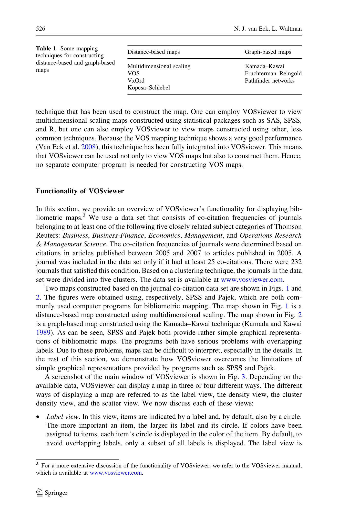

저자: Nees Jan van Eck, Ludo Waltman | 날짜: 2009 | Journal: Scientometrics | DOI: 10.1007/s11192-009-0146-3 | arXiv: -

Figure 1
대형 서지계량 지도(bibliometric map)를 직관적으로 시각화하는 도구가 필요한가? VOSviewer는 VOS(Visualization of Similarities) 기법을 기반으로 최대 5,000개 이상의 항목을 포함하는 대형 서지계량 지도를 고품질로 구성하고 표시하는 무료 소프트웨어이다. 줌, 스크롤, 검색, 밀도 시각화 등 기존 도구(SPSS, Pajek)가 제공하지 못한 대형 지도 특화 기능을 제공한다.
Figure 1
Figure 1: VOSviewer로 구성한 5,000개 주요 학술지의 공동 인용 지도 — 군집 구조와 밀도 시각화
서지계량 지도는 과학 분야의 구조, 연구 프론트, 학문 간 연결을 시각화하는 핵심 도구이다. 기존 소프트웨어가 대형 지도에서 가독성을 잃는 문제를 해결함으로써, 연구 정책 결정자와 학자들이 방대한 학술 문헌의 지형도를 쉽게 파악할 수 있게 되었다.
| 항목 | 점수 |
|---|---|
| Novelty | 4/5 |
| Technical Soundness | 4/5 |
| Significance | 5/5 |
| Clarity | 5/5 |
| Overall | 4/5 |
총평: 서지계량 지도 시각화의 실용적 한계를 돌파한 VOSviewer를 소개한 논문으로, 과학 지도화 연구의 표준 도구로 자리잡은 소프트웨어의 이론적·기술적 기반을 제시한다.